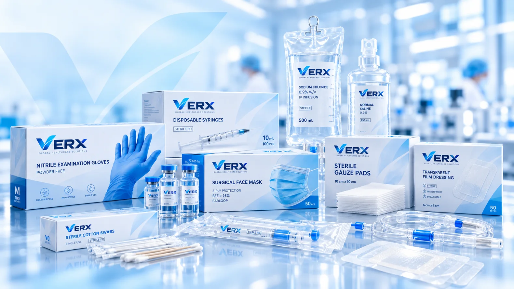

Product sourcing discussions
Start with the clinical application, required specifications, preferred alternatives and quantities.
Practical discussions around product choice, procurement and the details required to move an enquiry forward.

Different needs, different contexts — one more thoughtful way to begin.
Start with the clinical application, required specifications, preferred alternatives and quantities.
Discuss product options, commercial details and the information needed to assess a potential order.
Raise technical or regulatory document requirements early in your sourcing process.
Share delivery market, logistical needs and specific supply considerations for review.
From essential clinical consumables to specialist equipment, clear requirements make a productive conversation possible.

Tell us what your organisation needs. We’ll help you begin the right product and supply conversation.